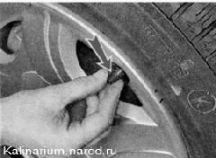
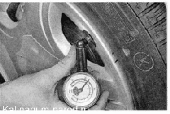
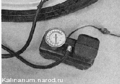
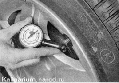

Шины - проверка давленияСовет Проверяйте давление воздуха в шинах через каждые 500 км пробега автомобиля. Давление воздуха в шине автомобиля не постоянно. При повышении температуры окружающего воздуха давление в шине возрастает, а при понижении — падает. При небольших колебаниях температуры окружающего воздуха давление в шине меняется незначительно. Если перепад температур достигает 10—15 С, необходимо проверить и довести давление в шинах до нормы. Повышается давление в шине и во время движения автомобиля с большой скоростью и частыми маневрами. Зимой это практически незаметно. Холодный воздух и низкая температура покрытия дороги не позволяют шине нагреться. В летний период набегающий поток теплого воздуха плохо охлаждает шину и ее температура начинает повышаться. Дополнительный нагрев шины происходит от разогретого солнечными лучами покрытия дороги. Все это может повысить давление в шине на 0,2—0,3 бар (20-30 кПа). Давление в шине измеряют только тогда, когда ее температура равна температуре окружающего воздуха. Для выполнения работы потребуются: — манометр; — компрессор или шинный насос. Последовательность выполнения 1. Подготавливаем автомобиль к выполнению работы. 2. Отворачиваем защитный колпачок ниппеля. 
3. Плотно прижимаем манометр к торцу ниппеля и удерживаем его в таком положении 1—2 с, после чего отсоединяем манометр от ниппеля.  4. Возвращаем стрелку манометра на ноль и повторяем проверку. 5. Если давление в шине ниже нормы, подкачиваем ее при помощи насоса или компрессора. При подкачке контролируйте давление по показаниям манометра насоса или компрессора. Манометр при накачивании показывает давление не в шине, а в подающем воздух шланге. Чтобы определить истинное давление в шине, необходимо прервать процесс накачивания. 6. Если давление в шине колеса выше нормы, стравливаем воздух, утапливая ось ниппеля специальным шипом на корпусе манометра или лезвием отвертки. Выпускаем воздух из шины небольшими порциями с промежуточной проверкой давления  7. Наворачиваем на ниппель защитный колпачок. 8. Аналогично проводим проверку давления в остальных колесах автомобиля. |